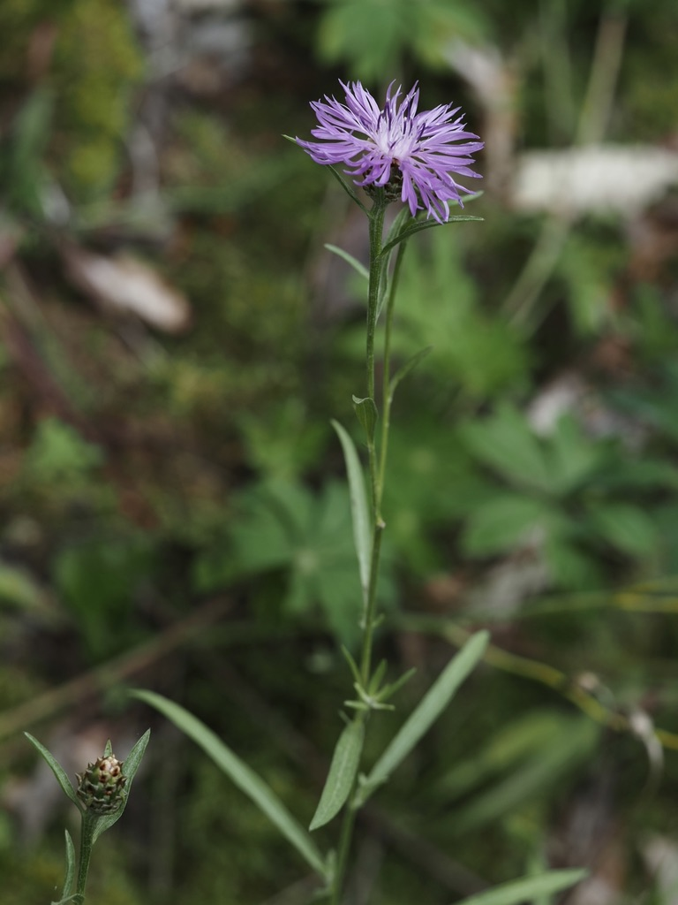
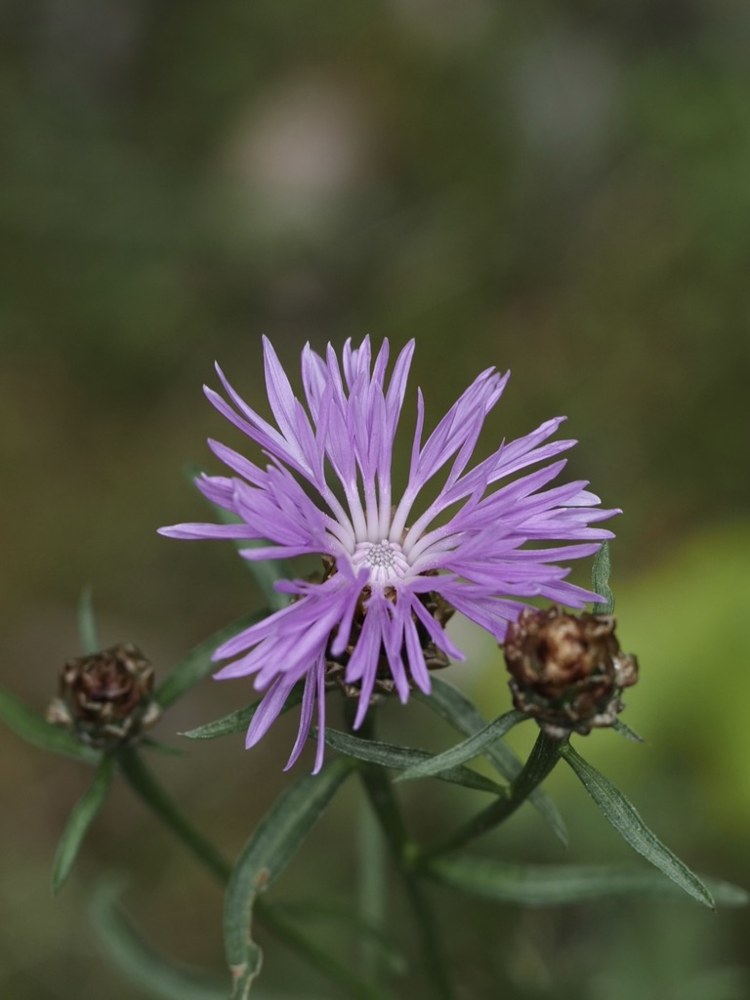

Die unermüdliche Lila in den Wiesen – Bestäuber-Magnet von Juni bis Oktober.



Korbblüte mit Trick
Was wie eine einzige Blüte aussieht, ist in Wirklichkeit ein dicht gepacktes Körbchen aus vielen winzigen Einzelblüten. Die rosa-violetten „Strahlblüten" am Rand sind tatsächlich vergrößerte Randblüten – sie produzieren keinen Samen, dienen aber als Fluglandeplatz und Werbeschild für die fruchtbaren Röhrenblüten in der Mitte. Ein Marketing-Trick der Natur.
Hüllblätter als Bestimmungsschlüssel
Ein typisches Erkennungsmerkmal sind die strohig-trockenen, dachziegelartig angeordneten Hüllblätter unterhalb des Körbchens. Bei C. jacea sind sie hellbraun mit dunklerem, gefranstem Rand. Diese kleinen, oft übersehenen Strukturen sind in der Botanik der entscheidende Bestimmungsschlüssel zwischen den vielen Centaurea-Arten.
Wissenswertes & Merksätze
Verwechslung mit Disteln
Centaurea jacea ist KEINE Distel – sie hat keine Stacheln, weder am Stängel noch an den Blättern. Wer sie pflückt, merkt sofort den Unterschied: Sie sticht nicht.
Ökologisches Schwergewicht
Wenige heimische Pflanzen werden von so vielen Insektenarten besucht: Hummeln, Wildbienen, Schmetterlinge (besonders Bläulinge), Schwebfliegen. Wo Wiesen-Flockenblumen blühen, summt es.